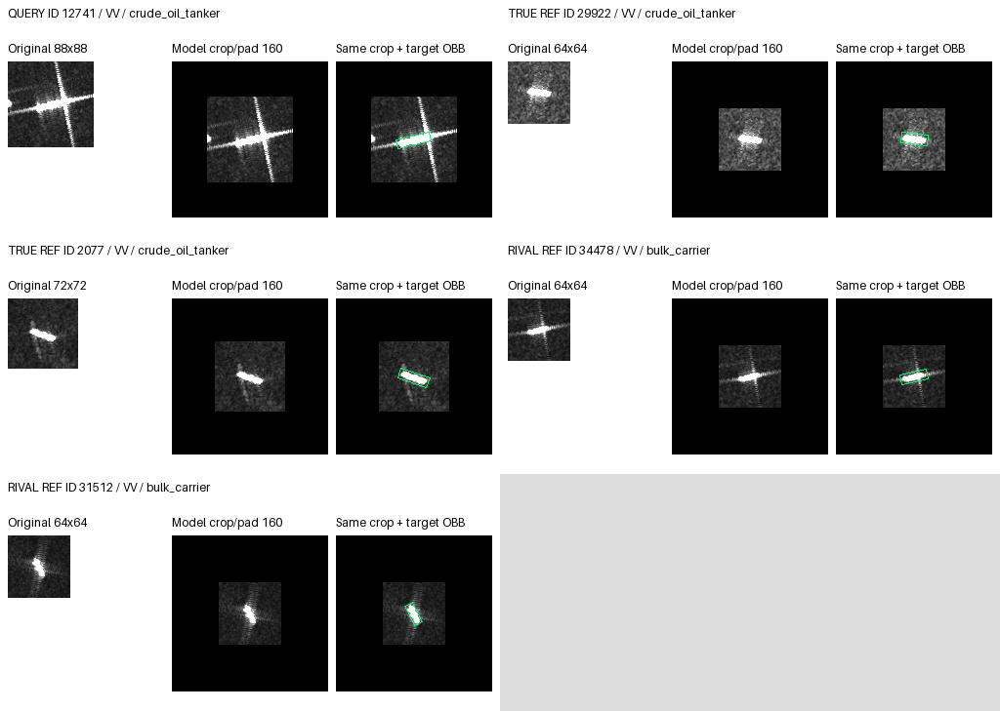
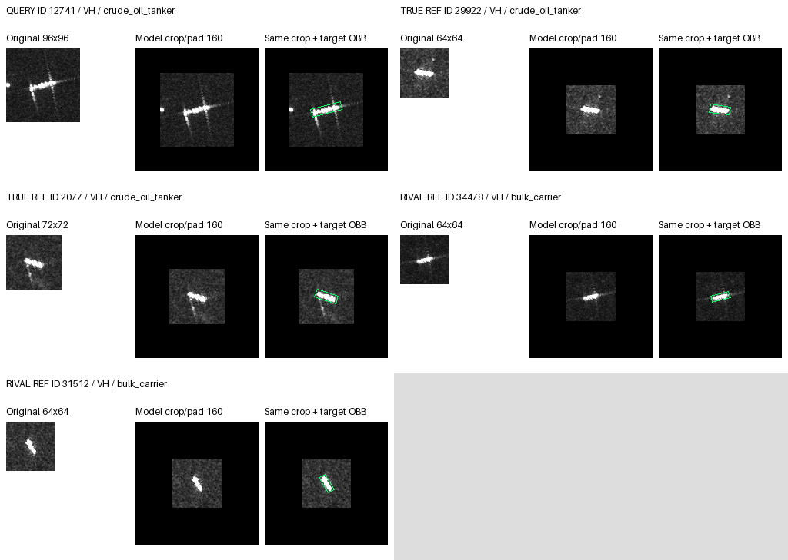
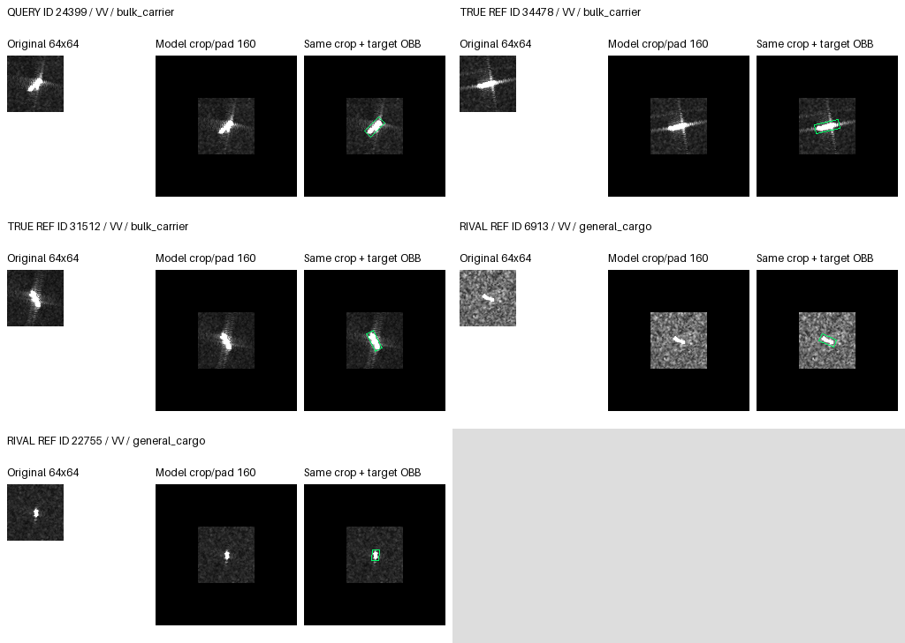
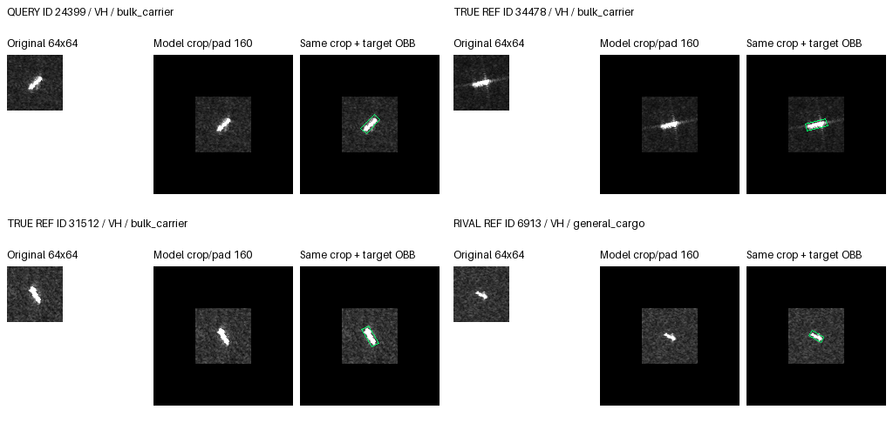

VV/VH separate; original pixels and exact crop/pad; separate OBB overlay. Rendered, not visually reviewed.
{
"arm": "aligned",
"reference": "saved_baseline",
"seeds": [
17,
29,
43
],
"absent": [],
"cases": 2,
"panels": 4,
"visual_status": "not_reviewed",
"rule": "At most two additional queries per dataset, changed after seed17 but unchanged at seed17, excluding pilot cases. aligned-pooled top1 differences, then new-vs-CE differences, absolute margin differences, ID, order; deterministic.",
"references": "Actual fixed reference manifest; exclude identical ID/MMSI; first two same/rival class entries in bank order. No resizing.",
"limitation": "Outcome-selected examples are not population proportions. Bank order is not learned attention ranking. No new per-reference attention trace or physical causal evidence."
}{
"id": "12741",
"label": 5,
"seed": 43,
"state": "rescued",
"old": 0,
"new": 5,
"changed": true,
"rival": 0,
"margin_change": 0.3124825954437256,
"arm": "aligned",
"reference": "saved_baseline",
"state_orders": 1,
"new_vs_ce": false,
"aligned_vs_pooled": false,
"ce_prediction": 5,
"pooled_prediction": 5,
"new_ce_margin_delta": -0.018349289894104004,
"aligned_pooled_margin_delta": 0.0008263587951660156,
"dataset": "private",
"visual_status": "not_reviewed",
"class_name": "crude_oil_tanker",
"rival_name": "bulk_carrier",
"mmsi": "372894000",
"pass_group": "S1A_060268_077D6F",
"port": "Singapore",
"orders": [
{
"seed": 17,
"saved_baseline": {
"prediction": 5,
"logits": [
0.8944519758224487,
-6.915894985198975,
-8.375152587890625,
-4.0229949951171875,
-7.874850749969482,
1.2329167127609253,
-1.2156208753585815,
-10.037354469299316
],
"truth_rival_margin": 0.33846473693847656
},
"ce": {
"prediction": 5,
"logits": [
0.15945254266262054,
-7.1188225746154785,
-8.552824020385742,
-4.328798770904541,
-7.885725498199463,
0.8984835743904114,
-0.665865421295166,
-8.986005783081055
],
"truth_rival_margin": 0.7390310317277908
},
"aligned": {
"prediction": 5,
"logits": [
0.7452877163887024,
-6.841679573059082,
-8.559479713439941,
-4.011109352111816,
-7.963700294494629,
1.4170295000076294,
-0.9743285179138184,
-9.980772972106934
],
"truth_rival_margin": 0.671741783618927
},
"pooled": {
"prediction": 5,
"logits": [
0.7488650679588318,
-6.84013557434082,
-8.561426162719727,
-4.012807846069336,
-7.965266227722168,
1.4223533868789673,
-0.9751275181770325,
-9.985743522644043
],
"truth_rival_margin": 0.6734883189201355
},
"state": "CC"
},
{
"seed": 29,
"saved_baseline": {
"prediction": 5,
"logits": [
-0.5122056603431702,
-7.637447834014893,
-7.688258647918701,
-3.675304651260376,
-4.504143714904785,
0.9288432002067566,
-2.9376206398010254,
-10.172872543334961
],
"truth_rival_margin": 1.4410488605499268
},
"ce": {
"prediction": 5,
"logits": [
-1.2227401733398438,
-8.018671989440918,
-7.856784820556641,
-4.198034763336182,
-4.610280990600586,
0.7528060674667358,
-2.1261963844299316,
-9.203773498535156
],
"truth_rival_margin": 1.9755462408065796
},
"aligned": {
"prediction": 5,
"logits": [
-0.6591918468475342,
-7.473382949829102,
-8.071711540222168,
-3.6852221488952637,
-4.570424556732178,
1.012790560722351,
-2.6040852069854736,
-10.083497047424316
],
"truth_rival_margin": 1.6719824075698853
},
"pooled": {
"prediction": 5,
"logits": [
-0.6559723019599915,
-7.470695495605469,
-8.074594497680664,
-3.6845247745513916,
-4.5720415115356445,
1.0137341022491455,
-2.6060991287231445,
-10.086331367492676
],
"truth_rival_margin": 1.669706404209137
},
"state": "CC"
},
{
"seed": 43,
"saved_baseline": {
"prediction": 0,
"logits": [
2.3942108154296875,
-8.464125633239746,
-4.871970176696777,
-2.601247549057007,
-6.045926094055176,
2.2664382457733154,
-2.1359405517578125,
-8.3583402633667
],
"truth_rival_margin": -0.12777256965637207
},
"ce": {
"prediction": 5,
"logits": [
1.756947636604309,
-8.43875503540039,
-5.274446964263916,
-2.677051305770874,
-5.8821797370910645,
1.9600069522857666,
-1.7393038272857666,
-7.88496208190918
],
"truth_rival_margin": 0.20305931568145752
},
"aligned": {
"prediction": 5,
"logits": [
2.1460275650024414,
-8.431488037109375,
-5.10339879989624,
-2.5325398445129395,
-5.9180192947387695,
2.330737590789795,
-1.8845547437667847,
-8.332478523254395
],
"truth_rival_margin": 0.18471002578735352
},
"pooled": {
"prediction": 5,
"logits": [
2.1498727798461914,
-8.42996597290039,
-5.102527618408203,
-2.5332536697387695,
-5.919312477111816,
2.333756446838379,
-1.8872039318084717,
-8.335402488708496
],
"truth_rival_margin": 0.1838836669921875
},
"state": "rescued"
}
],
"panels": {
"vv": {
"file": "rescued_12741_vv.png",
"same_class_candidates": 2,
"rival_candidates": 2,
"shown_reference_ids": [
"29922",
"2077",
"34478",
"31512"
],
"query_available": true,
"same_class_usable": 2,
"rival_usable": 2
},
"vh": {
"file": "rescued_12741_vh.png",
"same_class_candidates": 2,
"rival_candidates": 2,
"shown_reference_ids": [
"29922",
"2077",
"34478",
"31512"
],
"query_available": true,
"same_class_usable": 2,
"rival_usable": 2
}
},
"all_legal_reference_ids": [
"34478",
"31512",
"14814",
"16401",
"6913",
"22755",
"24527",
"7790",
"36308",
"23719",
"29922",
"2077",
"12041",
"7429",
"13000",
"13276"
]
}

{
"id": "24399",
"label": 0,
"seed": 43,
"state": "WW",
"old": 2,
"new": 6,
"changed": true,
"rival": 2,
"margin_change": 0.0003916025161743164,
"arm": "aligned",
"reference": "saved_baseline",
"state_orders": 1,
"new_vs_ce": false,
"aligned_vs_pooled": false,
"ce_prediction": 6,
"pooled_prediction": 6,
"new_ce_margin_delta": 0.19378948211669922,
"aligned_pooled_margin_delta": 0.00035953521728515625,
"dataset": "private",
"visual_status": "not_reviewed",
"class_name": "bulk_carrier",
"rival_name": "general_cargo",
"mmsi": "511101582",
"pass_group": "S1A_058688_074483",
"port": "Jebel Ali",
"orders": [
{
"seed": 17,
"saved_baseline": {
"prediction": 2,
"logits": [
-1.5929532051086426,
-6.292211055755615,
1.280950903892517,
0.8590918779373169,
-1.6803442239761353,
-8.345619201660156,
0.2881360948085785,
-6.205289363861084
],
"truth_rival_margin": -2.8739041090011597
},
"ce": {
"prediction": 2,
"logits": [
-2.3064253330230713,
-6.328361988067627,
1.0200268030166626,
0.6319116950035095,
-1.6578383445739746,
-8.673750877380371,
0.6603229641914368,
-5.428753852844238
],
"truth_rival_margin": -3.326452136039734
},
"aligned": {
"prediction": 2,
"logits": [
-1.6547960042953491,
-6.281426429748535,
1.2126046419143677,
0.8302228450775146,
-1.69546377658844,
-8.30970573425293,
0.36083123087882996,
-6.171867370605469
],
"truth_rival_margin": -2.867400646209717
},
"pooled": {
"prediction": 2,
"logits": [
-1.655163049697876,
-6.280774116516113,
1.2140955924987793,
0.8275741338729858,
-1.693750023841858,
-8.311613082885742,
0.3597220480442047,
-6.169510364532471
],
"truth_rival_margin": -2.8692586421966553
},
"state": "WW"
},
{
"seed": 29,
"saved_baseline": {
"prediction": 2,
"logits": [
-2.0012693405151367,
-5.9015703201293945,
1.6818580627441406,
1.048135757446289,
0.4350372850894928,
-6.834204196929932,
0.9198630452156067,
-6.423125267028809
],
"truth_rival_margin": -3.6831274032592773
},
"ce": {
"prediction": 6,
"logits": [
-2.612992525100708,
-5.97011661529541,
1.478724479675293,
0.6263422966003418,
0.3378419578075409,
-7.029721736907959,
1.5267870426177979,
-5.548184871673584
],
"truth_rival_margin": -4.091717004776001
},
"aligned": {
"prediction": 2,
"logits": [
-2.054668664932251,
-5.89333963394165,
1.5991898775100708,
1.0215164422988892,
0.41286996006965637,
-6.8211517333984375,
1.0103007555007935,
-6.367621421813965
],
"truth_rival_margin": -3.6538585424423218
},
"pooled": {
"prediction": 2,
"logits": [
-2.0552172660827637,
-5.894423961639404,
1.601741075515747,
1.0200676918029785,
0.4139656722545624,
-6.8221001625061035,
1.0089926719665527,
-6.366562843322754
],
"truth_rival_margin": -3.6569583415985107
},
"state": "WW"
},
{
"seed": 43,
"saved_baseline": {
"prediction": 2,
"logits": [
-1.8542697429656982,
-7.390495300292969,
1.6976557970046997,
-0.09314525127410889,
-0.7287490367889404,
-8.58984661102295,
1.6032785177230835,
-7.9518513679504395
],
"truth_rival_margin": -3.551925539970398
},
"ce": {
"prediction": 6,
"logits": [
-2.430690050125122,
-7.330348968505859,
1.3146333694458008,
-0.14747785031795502,
-0.6015706062316895,
-8.868195533752441,
1.920775055885315,
-7.508010387420654
],
"truth_rival_margin": -3.745323419570923
},
"aligned": {
"prediction": 6,
"logits": [
-1.9296404123306274,
-7.4182658195495605,
1.6218935251235962,
-0.0848001167178154,
-0.7115177512168884,
-8.60051155090332,
1.687156081199646,
-7.8946356773376465
],
"truth_rival_margin": -3.5515339374542236
},
"pooled": {
"prediction": 6,
"logits": [
-1.9292412996292114,
-7.417186260223389,
1.6226521730422974,
-0.08732012659311295,
-0.7114953994750977,
-8.601856231689453,
1.6862047910690308,
-7.89398193359375
],
"truth_rival_margin": -3.551893472671509
},
"state": "WW"
}
],
"panels": {
"vv": {
"file": "WW_24399_vv.png",
"same_class_candidates": 2,
"rival_candidates": 2,
"shown_reference_ids": [
"34478",
"31512",
"6913",
"22755"
],
"query_available": true,
"same_class_usable": 2,
"rival_usable": 2
},
"vh": {
"file": "WW_24399_vh.png",
"same_class_candidates": 2,
"rival_candidates": 1,
"shown_reference_ids": [
"34478",
"31512",
"6913"
],
"query_available": true,
"same_class_usable": 2,
"rival_usable": 1
}
},
"all_legal_reference_ids": [
"34478",
"31512",
"14814",
"16401",
"6913",
"22755",
"24527",
"7790",
"36308",
"23719",
"29922",
"2077",
"12041",
"7429",
"13000",
"13276"
]
}
